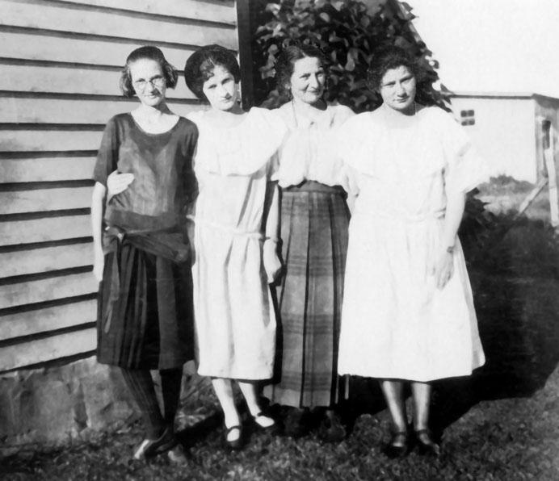

CAMPBELL COUSINS CORRESPONDENCE

*
* * * *
Photo of
(Left to Right)
Ruby Deats
Iva Deats
Leah Deats
Eula Deats
Taken in Summer of 1923
Osceola, Pa.,
October 8, 1923.
Dear Cousins:-
It is one beautiful
morning here in the country.
My family are well at
present. Two of the girls are in school. Iva graduates
at Elkland High School this term. Ruby
goes to Osceola graded school; is doing fine and stays
with Aunt Minnie Clark
most of the winter weather. Aunt Minnie and Uncle Will
are both well and happy at this writing, but Aunt Ann VanDusen is
not in the best of health but we surely hope for her
speedy recovery soon.
If my dear father
was living he surely would be pleased with this
Correspondence. I have read all the letters,‑ some of
them two or three times. I find them very interesting.
Some of the Cousins I have never seen, nor ever expect
to.
If any of the Cousins
ever come to Osceola and wish to visit the old
homestead of grandfather
Tubbs, on which we live, you will be very
welcome. I always have Aunt Minnie and Uncle Will up
for Thanksgiving Dinner and we enjoy roast pig. I am
planning for them this year.
It has been a very
short summer to me; we have had very little rain; it
is very dry here; water is scarce on the farm; we have
the work most all finished except plowing and it is
too dry to plow at present.
I guess I will have to
close as I cannot think of anything that would
interest you. Will try to do better in the future. I
am,
Very truly yours,
COUSIN LEAH TUBBS DEATS.
- Report No. 2 - Page 19 -
(Jane Campbell
Family)